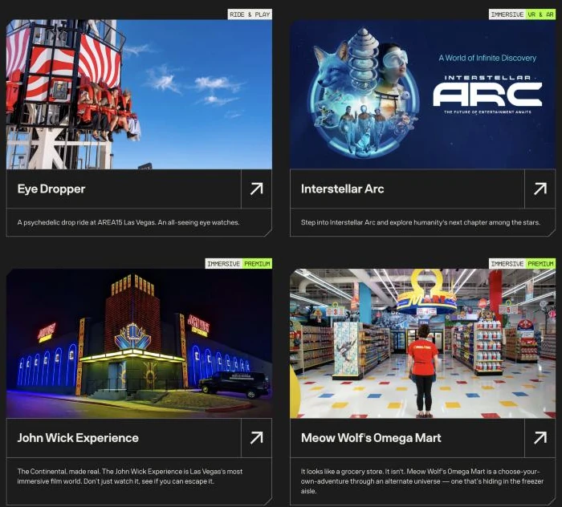

Brand voice systems.
These are the rules behind the headline: what a brand says, how it says it, and what it never does. I write them so the writers who come after me land in the same place, and the thousandth line still sounds like the first.
6
Voice systems, each one started from nothing
4
Regulated categories: wealth, mortgage, telecom, institutional finance
2
Written at the same time as the model instruction set that runs them
Act one
What's in one
The parts every voice system has, in roughly the order they get decided.
Verizon
Terminology and nomenclature
At AKQA I replaced years of conflicting convention across VerizonWireless.com and the MyVerizon app with one vocabulary and one set of copy patterns, for a service with 113 million subscribers. Most of a voice system is settling what things are called before anybody has to argue about it.
Data hub. Data boost. Safety mode.
Plain words, same construction, no invented terms. A customer who learns one can predict the next, which is the only test a naming system has to pass.
Goldman Sachs
The persona and the principles
Embedded at the firm's headquarters across two engagements, writing the voice guidelines for a Private Wealth platform serving clients with $10M or more in investable assets. A voice system starts with deciding who the brand is when it talks, then turning that into rules somebody else can apply without asking.
“Financial tools are rarely simple. But they can always be clear.”
A principle I wrote, published at design.gs.com, February 2020
AREA15
One voice across many brands
Thirty-five acres and forty-plus venues off the Las Vegas Strip, each venue its own brand, all required to sound like one place. Sole writer, thirty pages in ten weeks, no voice guide in existence on arrival. The hardest version of the problem, because the tone has to hold while the subject changes completely every few hundred words.

Act two
What it has to survive
A system is only worth having if it holds up in the conditions that break a style guide.
Lincoln
Many hands
Five years owning one brand's voice across two offices, every agency partner, and every market, through four vehicle launches and the brand's centennial. A voice system is only real when people who have never met apply it the same way, which makes arbitration most of the job.
“To a new century of you.”
The centennial line, 2022
Better.com
Bad news
A year on onboarding, loan application flows, and the error and delay states inside a mortgage. Most voice guides specify how a brand sounds when things go well. Almost none say what happens when the news is bad, which is the only part that is actually hard.

“We didn’t hear back from the underwriter. That’s normal, we’ll ping them again tomorrow.”
Error and delay state
SoundCloud
A blank page
Hired as the first dedicated writer in the company's history, with no guidelines, no legacy tone, and an audience that could identify anything corporate instantly. The voice written for the SoundCloud Go launch became the voice of the company.
Air Company
A blank page
A novel carbon-capture technology, a luxury bottle, and nothing in between. I wrote the manifesto, the tagline, and the brand book, which had to explain the science without turning the product into a lecture. Four times now the job has started with no process, no precedent, and nobody to ask.

Act three
Writing it for machines
What changes when the thing reading the guidelines is not a person.
Lincoln and AREA15
Rules a model can follow
A guideline written for a person and one written for a model are not the same document. On Lincoln the voice and style rules were built into a working model as an instruction set, with a strict and growing list of guardrails, so product owners who were not writers could draft on brand. Nothing reached the client without a writer reading it first.
Written for a person
Confident,
not arrogant.
We are self-assured without boasting. State what we know. Do not oversell.
Two writers read this and write two different lines. Both can defend theirs.
Written for a model
Same attribute. Now it can be followed, tested, and graded.
Model evaluation
Writing the standard, then testing it
I train and evaluate AI models on writing quality for an AI company, under NDA. Writing the standard and then grading against it changes how the standard gets written. A rule precise enough for a model to follow exposes every place the human version was vague and got away with it.
“Too clinical.”
A reaction
“Shifts to third person in the second sentence. Register holds at second person throughout. Rule: never change person inside one response.”
Something an engineer can build against